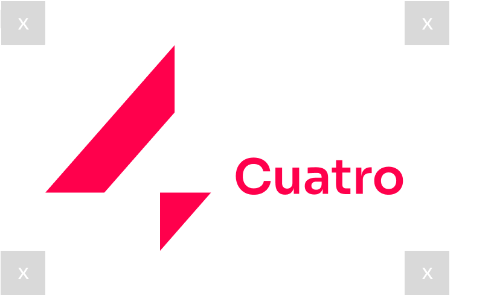
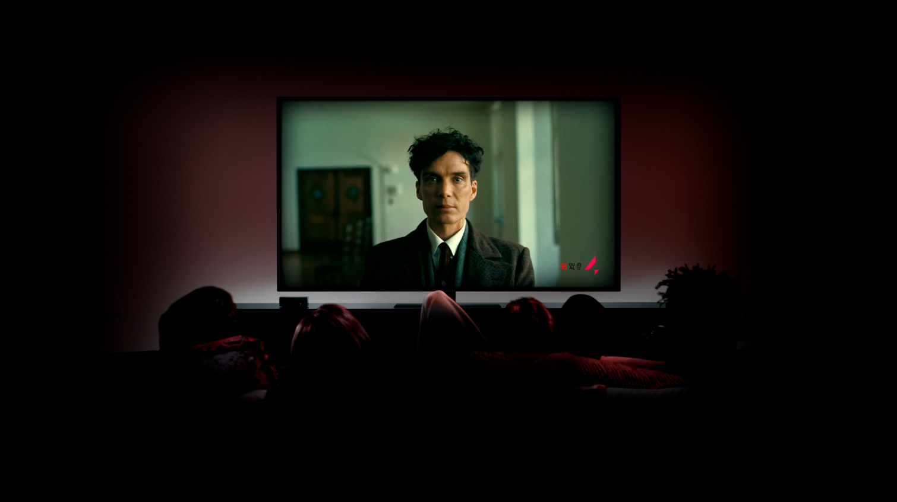
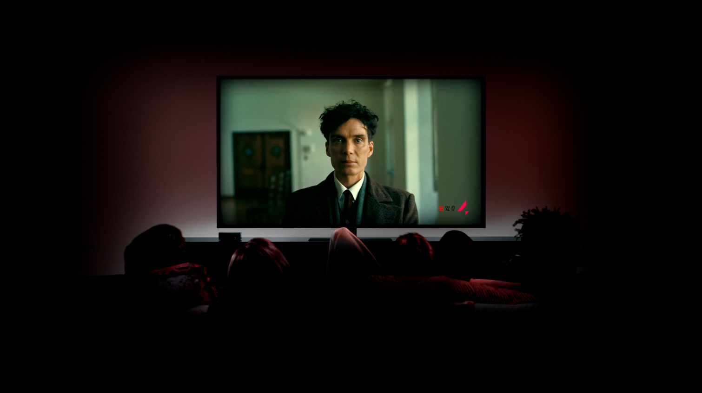

¡Bienvenidos a Cuatro!
En esta página se mostrará el manual de marca para el rediseño de Cuatro, realizado por el grupo 5 de 3ºGB: Irene, Victor, Abahyomi y Filipa. En el se encuentra recogida la propuesta de sistema gráfico, refrescando, modernizando y movilizando la identidad del canal 4
¿Que es Cuatro?
Cuatro es un canal de television de España operado por Mediaset España, grupo filial de la compañía italiana MFE (MediaForEurope), que cuenta con una programación generalista dedica a un público adulto. Oferece principalmente programas de producción propia y series de ficción, así como espacios deportivos e informativos. Desde enero de 2011, tras efectuarse la fusión con Gestevisión Telecinco, su centro de emisiones pasó a las instalaciones de Mediaset en el barrio madrileño de Fuencarral.
Concepto e Identidad
Cuatro se compromete a ofrecerte una programación diversa y dinámica que refleje la riqueza y complejidad de nuestro mundo actual. Es un medio de comunicación que busca informar educar y intretener. Creemos en el poder de la televisión para generar cambio y fomentar la participación ciudadana. Por eso, en Cuatro encontrarás programas que abordan temas como la política, la cultura, la ciencia, el medio ambiente y mucho más. Queremos ser una plataforma para todas las voces y opiniones, un espacio donde se pueda discutir de manera abierta y respetuosa.
Isotipo e imagotipo
Construccion
Se realizan algunos ajustes ópticos, como la insercción del triángulo menor en el aréa de la diagonal, esto ayuda a un mejor agrupamiento del isotipo
Area de respeto y tamaño mínimo
 Formas incorrectas
1. Juntar las letras
2. Desalinear las letras
3. Separar las letras
4. Cambiar de tipografía
5. Deformar las letras
6. Estirar el logo
7. Usar distinto % de opacidad en las letras
Marca dinámica
Estructura de formación
La retícula está compuesta por una serie de formas geométricas diagonales y rectangulares que se
interconectan para formar un diseño modular. Estas formas están organizadas de tal manera que
permiten la inserción de texto y gráficos, manteniendo un equilibrio visual y una coherencia
estilística.
Formas Diagonales: Las líneas diagonales crean un sentido de movimiento y dinamismo,
características que son fundamentales para la marca Cuatro. Estas diagonales también ayudan a
dirigir la vista del espectador, guiándolo a través del contenido de manera natural.
Formas Rectangulares: Los rectángulos proporcionan áreas claras y definidas para la colocación
de texto e iconos. Estas formas ayudan a mantener la información organizada y fácilmente
legible.
Colores Distintivos: El uso del color rojo vibrante como fondo refuerza la identidad de la marca
y hace que los elementos textuales y gráficos se destaquen.
Imagotipos complementarios
Para adaptar la marca a diferentes segmentos de programación, hemos desarrollado una marca dinámica que utiliza una retícula modular. Este sistema permite mantener una coherencia visual mientras se adapta a las diversas categorías de contenido del canal.
Positivo / negativo

Construcción

Tipografía
Nuestra tipografía es Sora
Sora presenta un diseño limpio y versátil que refleja las tendencias actuales en diseño gráfico y tipografía, proyectando una imagen contemporánea y dinámica acorde con nuestra identidad de marca.
A B C D E F G H I J K L M N O P Q R S T U V W X Y Z
a b c d e f g h i j k l m ñ o p q r s t u v w x y z
1 2 3 4 5 6 7 8 9 0 ! " # $ % & ' ( ) * + , - . / : ; <=> ? @ [ \ ] ^ _ ` { | } ~
Color
La paleta de colores del Canal 4 está diseñada para ser vibrante y moderna, reflejando la identidad dinámica y contemporánea de la marca. Cada color se ha seleccionado cuidadosamente para diferenciar los distintos segmentos de programación y asegurar una identidad visual coherente. A continuación se detalla cada uno de los colores utilizados
Principales

Secundarios

Gráfica aplicada
Rótulos sobre retícula
Ident
Sobreimpresión
Rótulos
Cierre
Mockups
 

Gracias!
Esperemos que disfrutes de la nueva experiencia de Cuatro!